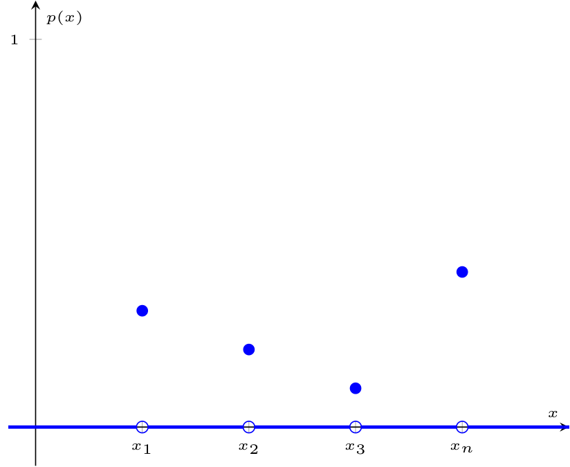
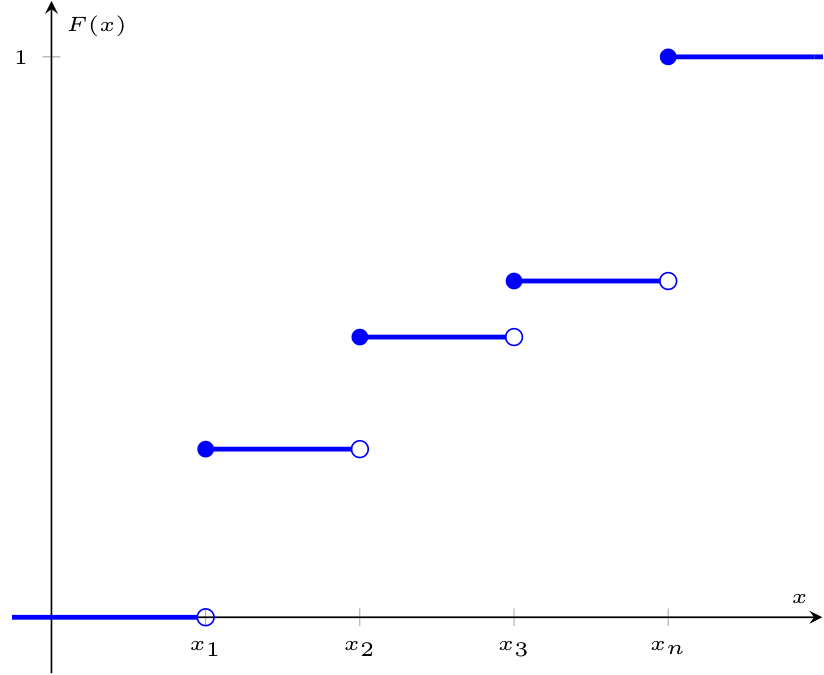

Definizione - Variabile casuale
Una variabile casuale (abbreviabile con v. c.) è una funzione che associa ad ogni esito di un esperimento un valore reale.
Osservazioni personali - Ad esempio
Considerando il lancio di una moneta, si definisce la variabile casuale \( X\) tale che \[ X = \left\{ \begin{array}{rl} -1 & \text{se esce testa} \\ 1 & \text{se esce croce} \end{array} \right. \]
Definizione - Variabile casuale discreta
Considerando un esperimento con un numero finito o numerabile di esiti (con \( n\) esiti). Se ad ogni esito si associa un unico valore reale, allora la variabile casuale si dice discreta e assumerà un numero finito di valori reali, ovvero \[ X \in \{ x_1, x_2, \ldots, x_n \} \qquad x_k \in \mathbb{R} \]
Definizione - Funzione di massa di probabilità
La funzione di massa di probabilità associata ad una variabile casuale \( X\) è una funzione che ad ogni valore reale associa la probabilità che la variabile casuale assuma quel valore.
In simboli si ha che è una funzione \[ p: \mathbb{R} \to [0, 1] \] tale che \[ p(x) = P(X = x) \] I punti in cui la funzione assume valore diverso da \( 0\) ovvero \( \{ x_1, \ldots, x_n \}\) sono detti punti di massa.Proprietà Per tale funzione si ha che:
In simboli si ha che è una funzione \[ p: \mathbb{R} \to [0, 1] \] tale che \[ p(x) = P(X = x) \] I punti in cui la funzione assume valore diverso da \( 0\) ovvero \( \{ x_1, \ldots, x_n \}\) sono detti punti di massa.

- ogni suo valore è compreso nell'intervallo \( [0,1]\), ovvero \[ 0 \leq p(x) \leq 1 \qquad \forall x \in \mathbb{R} \]
- la sommatoria di tutti i punti di massa è uguale a \( 1\), ovvero \[ \sum_{j = 1}^{n} p(x_j) = 1 \qquad \forall j \in \{ 1, \ldots, n \} \]
Osservazioni personali - In altre parole
Considerando che una variabile casuale \( X\) è una funzione che associa ad ogni esito \( e_i\) con probabilità \( p_i\) un valore \( x_i\), la funzione di massa di probabilità associata a \( X\) è quella funzione che associa ad ogni valore \( x\) reale la probabilità che \( X\) assuma quel valore \( x\) (ovvero la probabilità \( p_i\) che l'esito \( e_i\) associato al valore \( x_i\) si verifichi).
Definizione - Funzione di ripartizione di probabilità (o di distribuzione) per v. c. discrete
La funzione di ripartizione di probabilità (o di distribuzione) associata ad una variabile casuale discreta \( X \in \{ x_1, x_2, \ldots, x_n \}\) è una funzione che ad ogni valore associa la probabilità che la variabile assuma un valore minore o uguale a quel valore.
In simboli si ha che è una funzione \[ F: \mathbb{R} \to [0,1] \] tale \[ F(x) = P(X \leq x) \]Proprietà Per tale funzione si ha che:
In simboli si ha che è una funzione \[ F: \mathbb{R} \to [0,1] \] tale \[ F(x) = P(X \leq x) \]

- ogni suo valore è compreso nell'intervallo \( [0,1]\), ovvero \[ 0 \leq F(x) \leq 1 \qquad \forall x \in \mathbb{R} \]
- il limite di \( F(x)\) per \( x \to -\infty\) ha valore \( 0\), ovvero \[ \lim_{x \to -\infty} F(X) = P(X \leq - \infty) = 0 \]
- il limite di \( F(x)\) per \( x \to +\infty\) ha valore \( 1\), ovvero \[ \lim_{x \to +\infty} F(X) = P(X \leq + \infty) = 1 \]
- la funzione non è mai decrescente, ovvero se \( a \lt b\) in \( \mathbb{R}\), si ha che \[ F(a) \leq F(b) \]
- per una variabile casuale discreta \( F\) è a gradini e quindi non è derivabile.
Esempio - Determinare la funzione di massa e funzione di ripartizione di probabilità - Moneta truccata
Considerando il lancio di una moneta truccata per cui \( P(T) = \frac{1}{4}\) e che \( P(C) = \frac{3}{4}\) e una variabile casuale discreta \[ X = \left\{ \begin{array}{rl} 0 & \text{se esce testa} \\ 1 & \text{se esce croce} \end{array} \right. \] Si ha che la funzione di massa \( p\) sarà uguale a \[ p(x) = P(X = x) = \left\{ \begin{array}{rl} \frac{1}{4} & \text{se} \ x = 0 \\ \frac{3}{4} & \text{se} \ x = 1 \\ 0 & \text{altrimenti} \end{array} \right. \] mentre la funzione di ripartizione di probabilità \( F\) sarà uguale a \[ F(x) = P(X \leq x) = \left\{ \begin{array}{rl} 0 & \text{se} \ x \lt 0 \\ \frac{1}{4} & \text{se} \ x = 0 \\ \frac{1}{4} & \text{se} \ 0 \lt x \lt 1 \\ 1 & \text{se} \ x = 1 \\ 1 & \text{se} \ x \gt 1 \end{array} \right. \]
Esempio - Determinare la funzione di massa e funzione di ripartizione di probabilità - Dado equilibrato
Considerando il lancio di un dado equilibrato cubico, ovvero \[ S = \{ e_1, e_2, e_3, e_4, e_5, e_6 \} \] e una variabile casuale discreta \[ X = \left\{ \begin{array}{rl} 1 & \text{se} \ e_1 \\ 2 & \text{se} \ e_2 \\ \vdots & \\ 6 & \text{se} \ e_6 \\ \end{array} \right. \] Si ha che la funzione di massa \( p\) sarà uguale a \[ p(x) = P(X = x) = \left\{ \begin{array}{rl} \frac{1}{6} & \text{se} \ x = 1 \\ \frac{1}{6} & \text{se} \ x = 2 \\ \frac{1}{6} & \text{se} \ x = 3 \\ \frac{1}{6} & \text{se} \ x = 4 \\ \frac{1}{6} & \text{se} \ x = 5 \\ \frac{1}{6} & \text{se} \ x = 6 \\ 0 & \text{altrimenti} \\ \end{array} \right. \] mentre la funzione di ripartizione di probabilità \( F\) sarà uguale a \[ F(x) = P(X \leq x) = \left\{ \begin{array}{rl} 0 & \text{se} \ x \lt 1 \\ \frac{1}{6} & \text{se} \ x = 1 \\ \frac{1}{6} & \text{se} \ 1 \lt x \lt 2 \\ \frac{2}{6} & \text{se} \ x = 2 \\ \frac{2}{6} & \text{se} \ 2 \lt x \lt 3 \\ \frac{3}{6} & \text{se} \ x = 3 \\ \frac{3}{6} & \text{se} \ 3 \lt x \lt 4 \\ \frac{4}{6} & \text{se} \ x = 4 \\ \frac{4}{6} & \text{se} \ 4 \lt x \lt 5 \\ \frac{5}{6} & \text{se} \ x = 5 \\ \frac{5}{6} & \text{se} \ 5 \lt x \lt 6 \\ 1 & \text{se} \ x = 6 \\ 1 & \text{se} \ x \gt 6 \\ \end{array} \right. \]
Definizione - Variabile casuale continua (e funzione di densità di probabilità associata)
Una variabile casuale \( X\) si dice continua se ad essa è associata una funzione \( f\)\[ f: \mathbb{R} \to \mathbb{R}^+ \cup \{ 0 \} \] detta funzione di densità di probabilità tale che \[ \forall A \subset \mathbb{R} \qquad P(X \in A) = \int_A f(x) \ dx \] ovvero che l'area sottesa ad \( f(x)\) in un certo intervallo \( A\), indica la probabilità che \( X\) assuma un valore compreso in tale intervallo. Tale funzione indica Proprietà della funzione di densità Per tale funzione si ha che:
- è sempre positiva o nulla, ovvero \[ f(x) \geq 0 \qquad \forall x \in \mathbb{R} \]
- per definizione di variabile casuale continua, si ha che \[ 1 = P(X \in \mathbb{R}) = \int_{\mathbb{R}} f(x) \ dx \] il che è ovvio, dato che la variabile casuale può assumere valori solo in \( \mathbb{R}\);
- considerando \( y \in \mathbb{R}\), si ha che la probabilità che la variabile continua \( X\) sia uguale a \( y\) è nulla, ovvero \[ P(X = y) = \int_y^y f(x) \ dx = 0 \]
Osservazioni personali - Funzione di densità di probabilità per variabili casuali discrete
Non è possibile definire le funzioni di densità di probabilità per variabili discrete in quanto si ha che la funzione di ripartizione di probabilità è una funzione a gradini e, quindi, non è derivabile.
Osservazioni personali - Funzione di massa di probabilità per variabili casuali continue
Considerando una Variabile continua \( X\) si avrebbe la funzione di massa di probabilità sarebbe uguale a \[ p(x) = P(X = x) = 0 \qquad \forall x \in \mathbb{R} \] e non è quindi significativa.
Definizione - Funzione di ripartizione per v. c. continue
Considerando una variabile casuale continua \( X\) e la funzione di ripartizione di probabilità \( F(x)\) ad essa associata per cui vale La funzione di ripartizione di probabilità associata ad una variabile casuale continua è una funzione che ad ogni valore associa la probabilità che la variabile assuma un valore minore o uguale a quel valore, ovvero \[ F(a) = P(X \leq a) \] Considerando che si sta cercando il valore sotteso all'intervallo \( ]-\infty, a]\) e la definizione di funzione di densità di probabilità, si ha che \[ F(a) = \int_{-\infty}^a f(x) \ dx \]Proprietà Per tale funzione si ha quindi che:
- data la definizione di \( F(a)\), si ha che \( F\) è una funzione continua e derivabile per cui \[ \frac{d}{da} F(a) = \frac{d}{da} \left( \int_{-\infty}^a f(x) \ dx \right) = f(a) \]
- ogni suo valore è compreso nell'intervallo \( [0, 1]\), ovvero \[ 0 \leq F(a) \leq 1 \qquad \forall x \in \mathbb{R} \]
- il limite di \( F(a)\) per \( a \to -\infty\) ha valore \( 0\), ovvero \[ \lim_{a \to -\infty} F(a) = P(X \leq - \infty) = 0 \]
- il limite di \( F(a)\) per \( a \to +\infty\) ha valore \( 1\), ovvero \[ \lim_{a \to +\infty} F(a) = P(X \leq + \infty) = 1 \]
- la funzione non è mai decrescente, ovvero se \( a \lt b\) in \( \mathbb{R}\), si ha che \[ F(a) \leq F(b) \]
Esempio - Determinare la funzione di densità - Esempio 1
Considerando una variabile casuale continua \( X\) la cui funzione di densità di probabilità è uguale a \[ f(x) = \left\{ \begin{array}{lr} \alpha - x & \text{se} \ x \in [0, 2] \\ 0 & \text{altrimenti} \end{array} \right. \] determinare \( \alpha\) e determinare \( F(x)\). Determinare \( \alpha\) Per determinare \( \alpha\) consideriamo che \( f(x) \geq 0\), e ciò implica che \[ \alpha - x \geq 0 \qquad \forall x \in [0, 2] \] e si ha che \begin{aligned} & 1 = \int_{-\infty}^{+\infty} f(x) \ dx & \iff \\ & 1 = \int_{-\infty}^{0} 0 \ dx + \int_{0}^{2} f(x) \ dx + \int_{2}^{+\infty} 0 \ dx & \iff \\ & 1 = \int_{0}^{2} \alpha - x \ dx & \iff \\ & 1 = \left[ \alpha x - \frac{x^2}{2} \right]^2_0 & \iff \\ & 1 = 2 \alpha - 2 & \iff \\ & \frac{3}{2} = \alpha & \end{aligned} Si ha quindi che \[ f(x) = \left\{ \begin{array}{cl} \frac{3}{2} - x & \text{se} \ x \in [0, 2] \\ 0 & \text{altrimenti} \end{array} \right. \] ma si ha che \[ \frac{3}{2} - 2 \lt 0 \] il che è in contrasto alle condizioni iniziali.
Esempio - Determinare la funzione di densità - Esempio 2
Considerando una variabile casuale continua \( X\) la cui funzione di densità di probabilità è uguale a \[ f(x) = \left\{ \begin{array}{lr} \alpha \cdot \mathrm{e}^{-2x} & \text{se} \ x \geq 0 \\ 0 & \text{altrimenti} \end{array} \right. \] determinare \( \alpha\) e determinare \( F(x)\). Determinare \( \alpha\) Per determinare \( \alpha\) consideriamo che \( f(x) \geq 0\), e ciò implica che \begin{aligned} & \alpha \cdot \mathrm{e}^{-2x} \geq 0 \qquad \forall x \geq 0 & \iff \\ & \alpha \geq 0 & \end{aligned} e si ha che \begin{aligned} & 1 = \int_{-\infty}^{+\infty} f(x) \ dx & \iff \\ & 1 = \int_{-\infty}^{0} 0 \ dx + \int_{0}^{+\infty} f(x) \ dx & \iff \\ & 1 = \alpha \cdot \int_{0}^{+\infty} \mathrm{e}^{-2x} \ dx & \iff \\ & 1 = - \frac{\alpha}{2} \cdot \int_{0}^{+\infty} \frac -2 \cdot \mathrm{e}^{-2x} \ dx & \iff \\ & 1 = - \frac{\alpha}{2} \cdot \left[ \mathrm{e}^{-2x} \right]^{+\infty}_0 & \iff \\ & 1 = - \frac{\alpha}{2} \cdot (0 - 1) & \iff \\ & 1 = \frac{\alpha}{2} & \iff \\ & 2 = \alpha & \end{aligned} Si ha quindi che \[ f(x) = \left\{ \begin{array}{cl} 2 \cdot \mathrm{e}^{-2x} & \text{se} \ x \geq 0 \\ 0 & \text{altrimenti} \end{array} \right. \]Determinare \( F(x)\) Per determinare \( F(x)\) si ha che \[ \begin{array}{lcl} F(x) & = & \displaystyle \int_{-\infty}^{x} f(s) \ ds \\ & = & \left\{ \begin{array}{lcl} \int_0^x 2 \cdot \mathrm{e}^{-2s} \ ds & \text{se} \ x \geq 0 \\ \int_{-\infty}^0 0 \ ds & \text{altrimenti} \end{array} \right. \end{array} \] Da cui \begin{aligned} & = - \int_0^x -2 \cdot \mathrm{e}^{-2s} \ ds & = \\ & = - \left[ \mathrm{e}^{-2s} \right]_0^x & = \\ & = 1 - \mathrm{e}^{-2s} & \end{aligned} e quindi \[ F(x) = \left\{ \begin{array}{lcl} 1 - \mathrm{e}^{-2s} & \text{se} \ x \geq 0 \\ 0 \ ds & \text{altrimenti} \end{array} \right. \]
Definizione - Probabilità di variabili casuali in intervalli di valori
Considerando una variabile casuale \( X\) e due valori reali \( a, b \in \mathbb{R}\) con \( a \lt b\) si considerino i seguenti casi. \( P(a \lt X \leq b)\) La probabilità che \( X\) assuma valore in \( ]a, b]\) è uguale a \[ \begin{array}{ccl} P(a \lt X \leq b) & = & P(X \leq b) - P(X \leq a) \\ & = & F(b) - F(a) \end{array} \]\( P(a \leq X \leq b)\) La probabilità che \( X\) assuma valore in \( [a, b]\) è uguale a \[ \begin{array}{ccl} P(a \leq X \leq b) & = & P(X = a) + P(a \lt X \leq b) \\ & = & P(X = a) + F(b) - F(a) \end{array} \] dove si ha che:
- \( P(X = a) = 0\) se \( X\) è una variabile casuale continua;
- \( P(X = a)\) è anche \( \neq 0\) se \( X\) è una variabile casuale discreta.
- \( P(X = b) = 0\) se \( X\) è una variabile casuale continua;
- \( P(X = b)\) è anche \( \neq 0\) se \( X\) è una variabile casuale discreta.